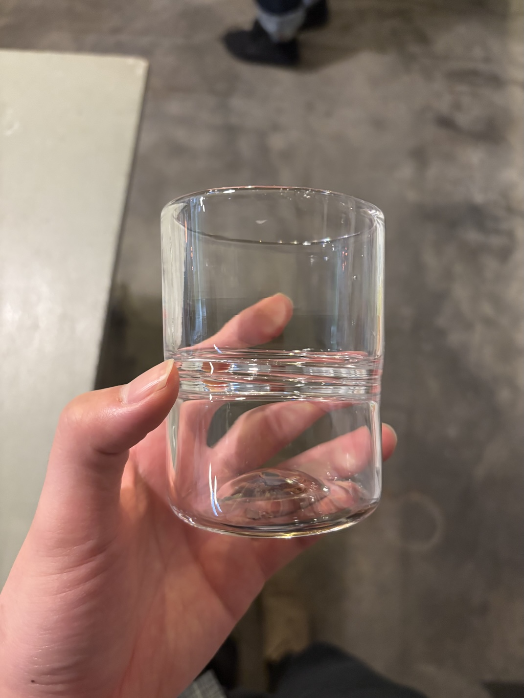
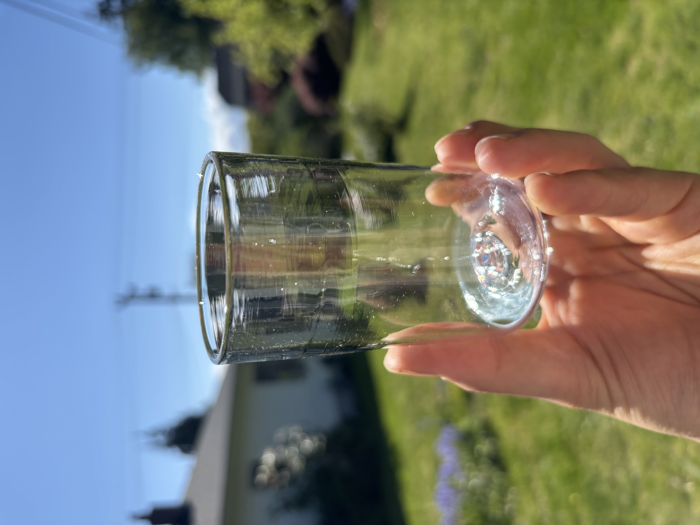
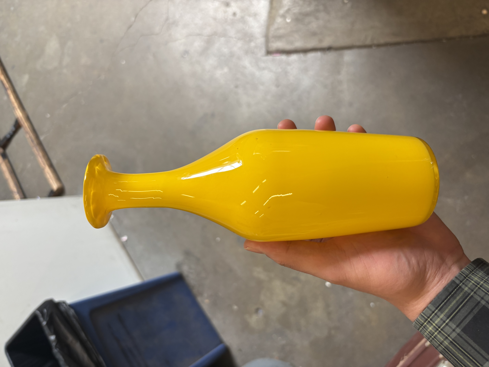
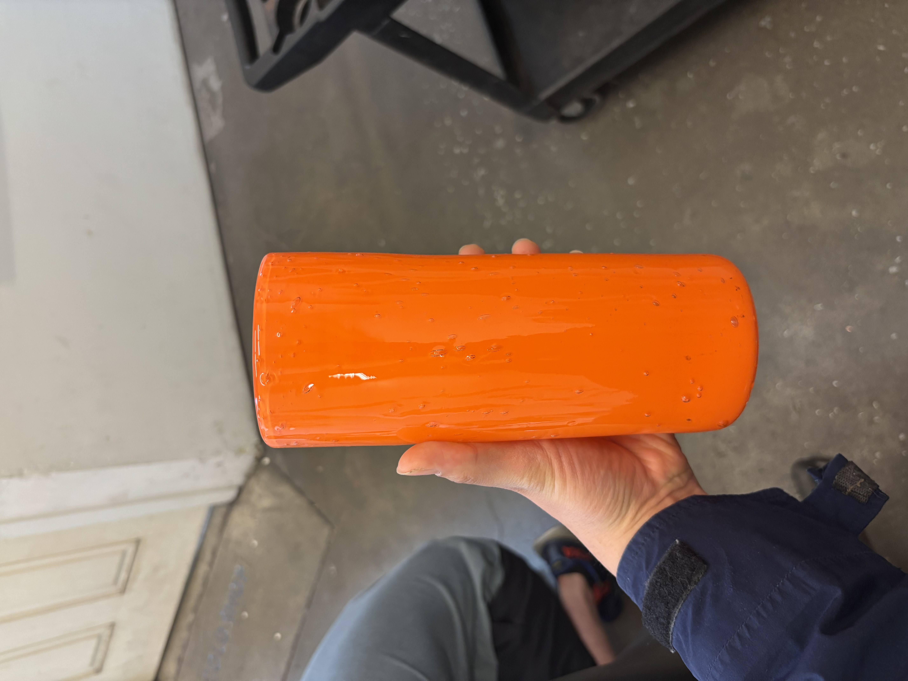
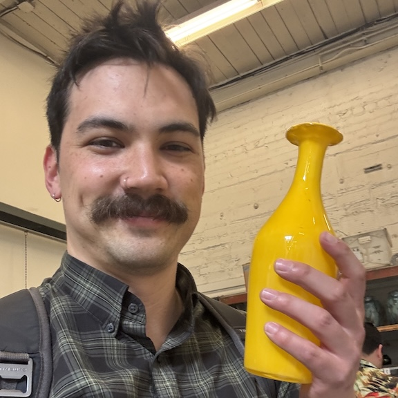

Tran O'Leary Glass Lab
An independent research lab exploring computational tools for glass art.
Through the medium of glass, we investigate how computation can help us better understand and interact with the
physical world.
We are currently focusing on hands-on artistic practice and interleave both programming and humanistic inquiry.
Our practice is rooted academically in computer science, especially human-computer interaction, computer
graphics, artificial intelligence, and programming languages. We also draw heavily from the humanities and
philosophy, with a focus on the phenomenology of perception (Merleau-Ponty) and technical mentality (Simondon).
Ongoing Projects
- Autoethnography of learning glassblowing
- Multimodal AI/XR guidance for glassblowing
- Interactive simulation of workable glass deformation
- Science communication YouTube channel (W.I.P.)
Photos






Selected Publications
J. Tran O’Leary, T. Ramesh, O. Zhang, and N. Peek.
“Tandem: Reproducible Digital Fabrication Workflows as Multimodal Programs.”
Proceedings of the 2024 ACM Conference on Human Factors in Computing Systems.
doi:10.1145/3613904.3642751
G. Benabdallah and N. Peek. “Technical Mentality: Principles for
HCI Research and Practice.”
Proceedings of the 2024 ACM Conference on Human Factors in Computing Systems.
doi:10.1145/3613904.3642720
J. Tran O’Leary, G. Benabdallah, and N. Peek.
“Imprimer: Computational Notebooks for CNC Milling.” Proceedings of
the 2023 ACM Conference on Human Factors in Computing Systems. doi:10.1145/3544548.3581334
J. Tran O’Leary, C. Nandi, K. Lee, and N. Peek.
“Taxon: a Language for Formal Reasoning with Digital Fabrication
Machines.” Proceedings of the 34th Annual ACM Symposium on User
Interface Software and Technology. doi:10.1145/3472749.3474779
Lab Members

Jasper Tran O'Leary, Ph.D.
I am a software engineer at Google working on the Network Infrastructure team within Google Cloud. I work
on the driver code for virtual network interface controllers to achieve next-generation networking
throughput for virtual machines.
I earned my PhD in computer science at the University of Washington, where I
pioneered physical-digital programming—novel programming tools that make digital fabrication feel like
actually programming, not just program execution. Before
that, I completed my undergraduate studies in computer science at the University of California, Berkeley.

Gabrielle Benabdallah, Ph.D.
I am a designer, researcher and postdoctoral scholar at the University of Washington, in the department of
Human Centered Design and Engineering. I work at the intersection of digital fabrication, design research
and philosophy. I am interested in ways of knowing through making, and developing tools for creativity that
support human-machine collaborations.
I am part of the TAT Lab and Machine Agency, as well as the DXARTS SoftLab and Studio Tilt.Prior to attending
graduate school, I worked as a writer and
conversation designer for Alexa at Amazon. I also worked as a video producer and bilingual writer for
various tech organizations in Montréal, QC.